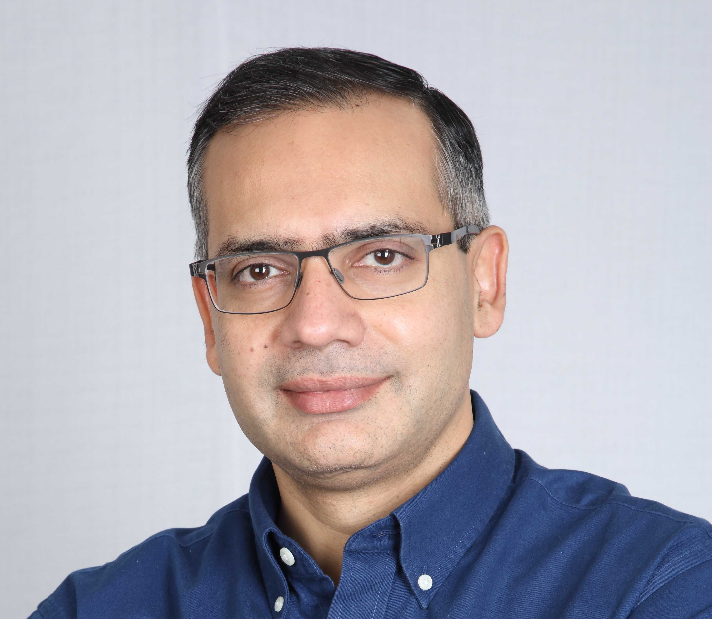
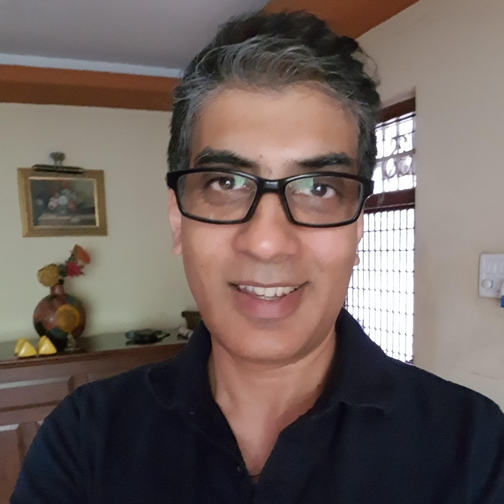

Speakers

Ajeet Bajaj
-
About info_outlineAjeet Bajaj is the first Indian to ski to the North Pole and South pole within a year. At the age of twelve, he climbed the 12,000ft high Friendship Peak near Kullu, and at the age of 16 he climbed the Hanuman Tibbal, a towering 20,000 feet tall mountain. After having graduated from the St. Stephens College Delhi, he won a bronze medal in the National Games for kayaking and a silver and bronze medal in international rafting competitions.

Deep Kalra
-
About info_outlineWith a bachelor's degree from St. Stephen's College and an MBA from IIM Ahmedabad, Deep Kalra is the Founder, Chairman and CEO of MakeMyTrip, the website that forever changed how India and the world travel. One of India's first Internet entrepreneurs, he has put India on the global map of change-makers and innovators.

Anil Srivatsa
-
About info_outlineAnil's life and career is the perfect example of eclectic yet classy. In the past 13 month, he, Along with his friends and family for some time he had driven 50000km across 38 countries in the past 12 months to spread awareness about organ donation. The founder of Radiowalla, the country's largest digital audio player, a marathoner the ex- CEO of Kings XI Punjab, the founder of Gift Of Life Adventure, and a dating expert amongst others, Anil is the paradigm of versatility. Stephens College Delhi, he won a bronze medal in the National Games for kayaking and a silver and bronze medal in international rafting competitions.

Ishita Choudhary
-
About info_outlineActively involved in capacity building, citizen and community participation, democracy, public policy, youth development, she is the founder of the Youth Parliament Foundation (TYPF). Ishita thinks most youth movements are not cognizant of the sociopolitical and economic history of previous initiatives and therefore, do not benefit from that experience or understand the history. She anticipates adult-led movements eventually dying out if conversations are not extended to younger generations.

Mehak Sagar
-
About info_outlineThe first site you are bound to open if you're a bride-to-be is WedMeGood. India's largest wedding planning portal, WedMeGood helps you discover, book, and review vendors, find inspiring ideas, and stay on track with a unique checklist. Having founded and established a popular wedding platform with high traction, Mehak is a digital native who has put India on the global map of entrepreneurs

Shamim Meraj
-
About info_outlineMr. Meraj has put together a boy's football team, Real Kashmir FC, from Kashmir as part of his rehabilitation program. They have played many, many games since. He himself was educated in Kashmir, at the Burn Hall School, and currently stays in Srinagar, Jammu & Kashmir.